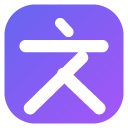

AI 划词翻译
选中文字，通过右键、浮动按钮或快捷键翻译成你选择的语言。
开始使用
两种方式任选其一，之后随时可以切换。
推荐
免费试用
不用注册，领取免费点数就能翻译，不需要 API Key。点数用完后注册可再得更多点数。
使用自己的 API Key
选择 ChatGPT、DeepSeek 或 DeepL，填入 Key 后直接连接，费用由平台按用量收取。
账户
登录后可以使用点数翻译，并查看点数与订阅状态。
剩余点数
翻译平台
选一个作为默认平台，弹窗里也能随时切换。
点数翻译
由 AI 划词翻译的服务完成翻译，不需要 API Key：使用赠送的点数，或订阅后无限使用。
- 支持划词、区域翻译、翻译面板和图片翻译，无需填写 API Key。
- 原文会经我们的服务器发送给模型服务商（目前是 DeepSeek）完成翻译；我们不保存原文和译文，账户只记录字数与扣点。
接口配置
API Key 只保存在本机，不同步；仅用于向你选择的平台鉴权。
高级：自定义接口地址
翻译行为
界面语言和翻译目标语言可以分别选择。
当前快捷键
读取中…
图片翻译
在网页图片上右键，选「翻译图片里的文字」；也可以在扩展图标里打开「图片翻译」页。
元素翻译规则
在网页上右键某个区域，选「为这个区域添加翻译按钮」，即可记住该网站的这个区域； 下次访问时，鼠标移到这类区域上就会出现翻译按钮。
视频实时字幕 实验
截取标签页的声音，在本机识别成文字，再翻成双语字幕；音频不会离开浏览器。
在网页视频上右键，选「视频实时字幕（实验）」；播放器拦掉了右键的话，点扩展图标里的「视频实时字幕」。